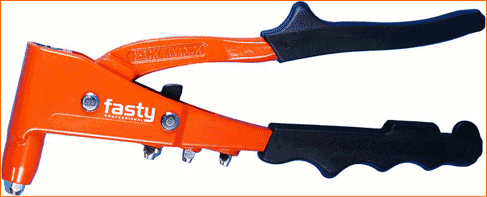

Установочный инструмент для вытяжки заклепок
Философские воззрения С. складывались первоначально под влиянием евр. средневековой философии (Маймонид, Крескас, Ибн Эзра). Её преодоление явилось результатом усвоения С. пантеистическо-материалистических воззрений Дж. Бруно,

| Составная часть |
Модель: RK 10 Размер: 250 x 80 x 20 mm Вес: 0,6 kg |
||||||||
| Примечание | 2,4 | 3,0 | 3,2 | 4,0 | 4,8 | 5,0 | 6,0 | 6,4 |
|
| Алюминий | |||||||||
| Сталь | |||||||||
| Медь | |||||||||
| Нерж. Сталь |